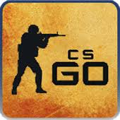
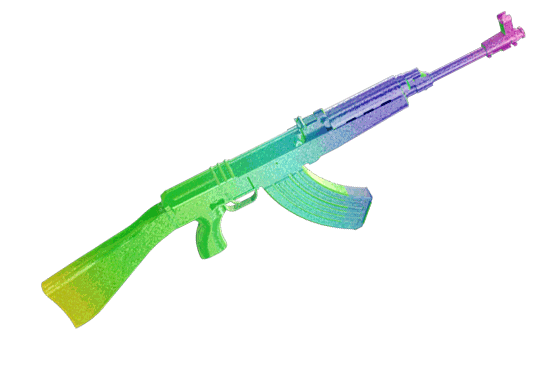
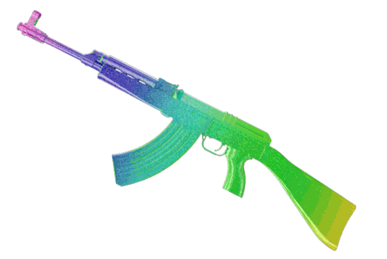

Sobre o Counter-Strike Global Offensive!
Counter-Strike: Global Offensive
Counter-Strike: Global Offensive (CS:GO) é um jogo online desenvolvido pela Valve Corporation e pela Hidden Path Entertainment, sendo uma sequência de Counter-Strike: Source.
Foi lançado no dia 21 de agosto de 2012 para as plataformas Windows e Mac OS X no Steam e ainda na Xbox 360.
O jogo conta com conteúdo clássico de tiro, como versões retrabalhadas de mapas clássicos, bem como novos mapas, personagens, modos de jogo e atualizações regulares.
Pós lançamento
Counter-Strike: Global Offensive foi lançado inicialmente com quatro modos de jogo: Casual Clássico, competitivo, demolição e corrida às armas e vários mapas oficiais para cada um dos modos de jogo.
Valve habilitou Steam Workshop em apoio ao CS:GO, permitindo que usuários façam upload de conteúdo criado pelo usuário, tais como mapas, armas, e cenários de jogo personalizado. Nas versões anteriores do Counter-Strike, os jogadores tinham de fazer download de mapas através de sites de terceiros, ou durante a conexão com o servidor.
As skins (peles das armas) criado pelos utilizadores têm a chance de ser adicionado no jogo como itens oficiais em atualizações, onde podem ser obtidos abrindo as caixas que existem no jogo através da compra de uma chave ou várias dependendo da vontade do utilizador.
Clica no gif abaixo para voltares à página inicial!
